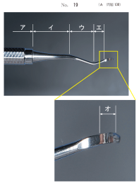
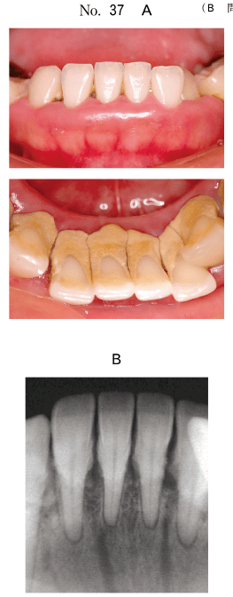
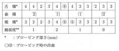

| スケーリング (Scaling) |
歯冠と歯根の表面に付着したプラーク・歯石・着色を除去する操作 |
|---|---|
| ルートプレーニング (Root Planing) |
歯石や起炎物質、細菌が入り込んで粗糙になったセメント質や象牙質を一層除去し、表面を滑沢にする処置 |
| 手用スケーラー | |
|---|---|
| キュレット型 | ユニバーサル型（両刃）、グレーシー型（片刃） 歯肉縁上・縁下両方に使用 |
| シックル型 | 歯肉縁上スケーリングに主に使用 |
| ホウ型 | 強固に付着した歯肉縁下歯石の除去 |
| ファイル型 | 歯根面の滑沢化 |
| チゼル型 | 前歯部隣接面（操作が頬側歯肉を傷つけやすく、現在はあまり用いられない） |
| 機械駆動スケーラー | |
| 超音波スケーラー | 25,000〜42,000Hz/秒、注水下で使用 ※ペースメーカー装着患者に禁忌 |
| エアスケーラー | 約6,000Hz/秒 |
| 番号 | 適応部位 |
|---|---|
| #1/2、#3/4 | 前歯部 |
| #5/6 | 前歯部と小臼歯部 |
| #7/8、#9/10 | 臼歯部舌側・口蓋側 |
| #11/12 | 臼歯部近心 |
| #13/14 | 臼歯部遠心 |
グレーシー型キュレットのバリエーション：
| 器具 | 角度（歯面に対して） |
|---|---|
| シックル型 | 約85° |
| キュレット型（スケーリング時） | 45〜85° |
| キュレット型（ルートプレーニング時） | 45〜60° |
※グレーシー型キュレットの第1シャンクは歯根面の長軸方向と平行にする
歯肉縁下スケーリングに用いる器具の写真（別冊No.00）を別に示す。
スケーリング時に歯根面の長軸方向と平行になるのはどれか。1つ選べ。

【解説】グレーシー型キュレットの各部位の名称を問う問題。スケーリング時に歯根面の長軸方向と平行になるのは第1シャンク（エ）である。刃部（ブレード）は歯面に対して45〜85°の角度で当てる。
41歳の女性。下顎前歯部の歯肉の腫れを主訴として来院した。ブラッシング指導に続いて歯肉縁上歯石除去を行うこととした。初診時の口腔内写真（別冊No.37A）とエックス線写真（別冊No.37B）とを別に示す。
歯石除去後に発現しやすいのはどれか。2つ選べ。

【解説】歯石除去後に発現しやすい症状は、歯の動揺（歯石による支持の喪失）と象牙質知覚過敏症（歯根面露出）である。歯肉の発赤・増殖は歯石除去後にはむしろ改善する。
次の文により65、66の問いに答えよ。
56歳の女性。下顎前歯部の動揺を主訴として来院した。3か月前に気付いていたがそのままにしていたという。前方滑走運動時に前歯部の咬合接触を認める。検査の結果、慢性歯周炎と診断し、歯周基本治療を行うこととした。初診時の口腔内写真（別冊No.25A）、エックス線画像（別冊No.25B）及び歯周基本治療に用いた器具の写真（別冊No.25C）を別に示す。歯周組織検査結果の一部を表に示す。
65 口腔清掃後、使用する器具として適切なのはどれか。2つ選べ。
66 続いて咬合調整を行うこととした。根拠はどれか。3つ選べ。

【解説】咬合調整の根拠となるのは、咬合性外傷を示す所見である。垂直性骨吸収と歯根膜腔の拡大は咬合性外傷の所見。歯の動揺は結果であり根拠とは言えない。歯石沈着は咬合とは無関係。